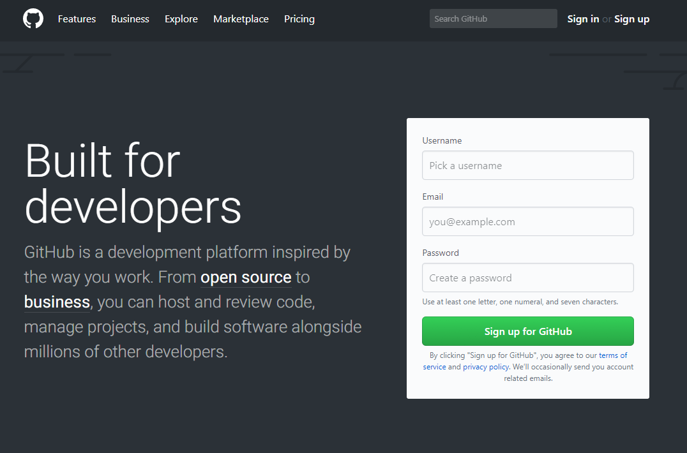
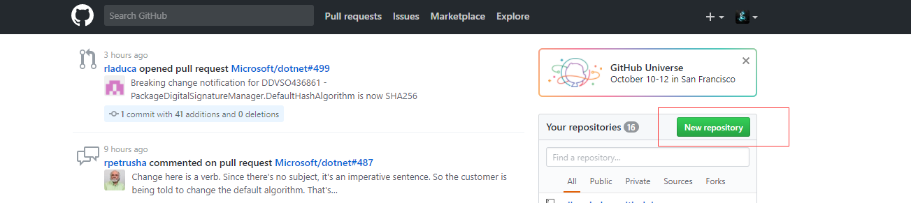
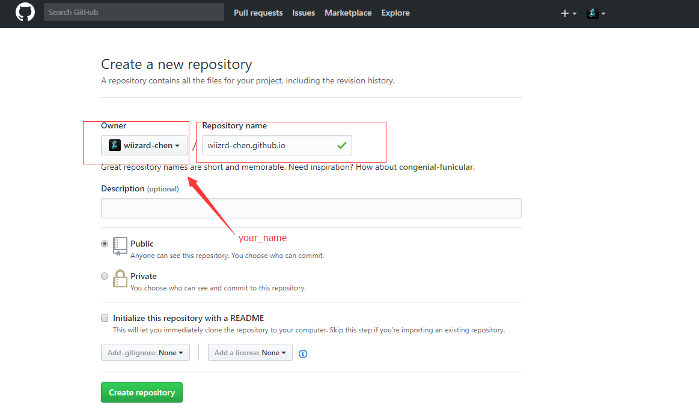
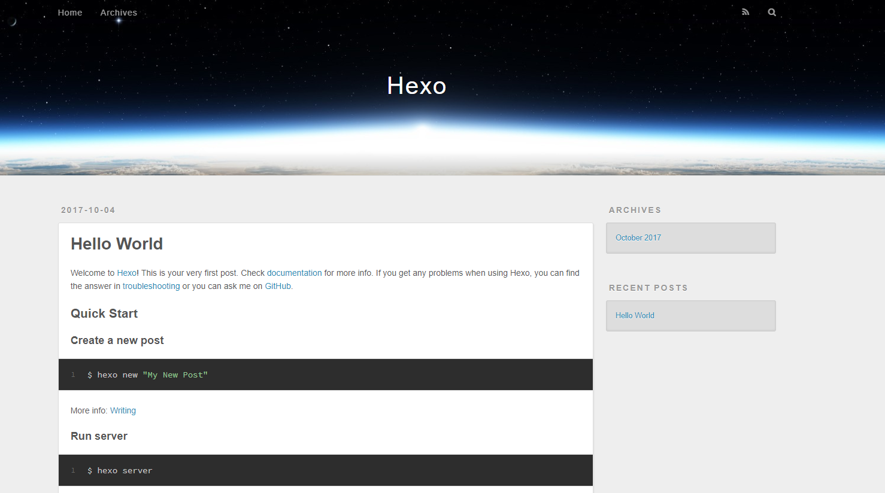

使用Hexo的博客框架，快速简单的搭建自己的博客教程（无需任何编程知识）
下载工具
安装Node.js,安装Git之后，打开Git bash，输入以下命令
|
|
这样就安装好了本地的环境
创建Github Pages
登陆Github，申请账号

- 申请账号完成，登陆账号创建 GitHub Pages
创建新仓库,点击New repository
仓库命名规则your_name.github.io，一定要按照规则填写好，点击Create repository。Github Pages创建好了

Hexo创建本地博客
- 在F盘创建文件夹Hexo_tutorial，打开git bash，输入命令
|
|
初始化hexo博客，输入以下命令
1$ hexo init your_name.github.io切换到新生成的文件夹
1$ cd your_name.github.io/生成博客，输入以下命令
12$ hexo g$ hexo s本地观看博客，在浏览器输入 http://localhost:4000/ ，配置成功的结果，不要关闭git bash，后面还要用到

发布博客
在本地搭建好博客，上传博客到github上去，让更多人看到自己的博客
首先安装部署工具，输入命令
1$ npm install hexo-deployer-git --save修改 your_name.github.io文件夹中的 _config.yml 配置信息
123456# Deployment## Docs: https://hexo.io/docs/deployment.htmldeploy:type: gitrepo: https://github.com/your_name/your_name.github.io.gitbranch: master修改完成后，保存结果，发布博客，输入命令
1$ hexo d
命令执行完成后，可以通过https://your_name.github.io地址访问你的博客了
完善博客
- 创建博客内容，在git bash 输入一下命令12$ hexo n helloINFO Created: F:\Hexo_tutorial\wiizard-chen.github.io\source\_posts\hello.md
输入完成后会出现一个路径，这个文件以md结尾，使用的是一种叫markdown的标记语言。Markdown的语法简洁明了、学习容易，而且功能比纯文本更强，很多人用它写博客。我常用的Markdown工具是Visual Studio Code
- 增添好了文件之后，再执行一次命令，推送到GitHub上，其他人就能看到你刚添加的内容了12$ hexo g$ hexo d